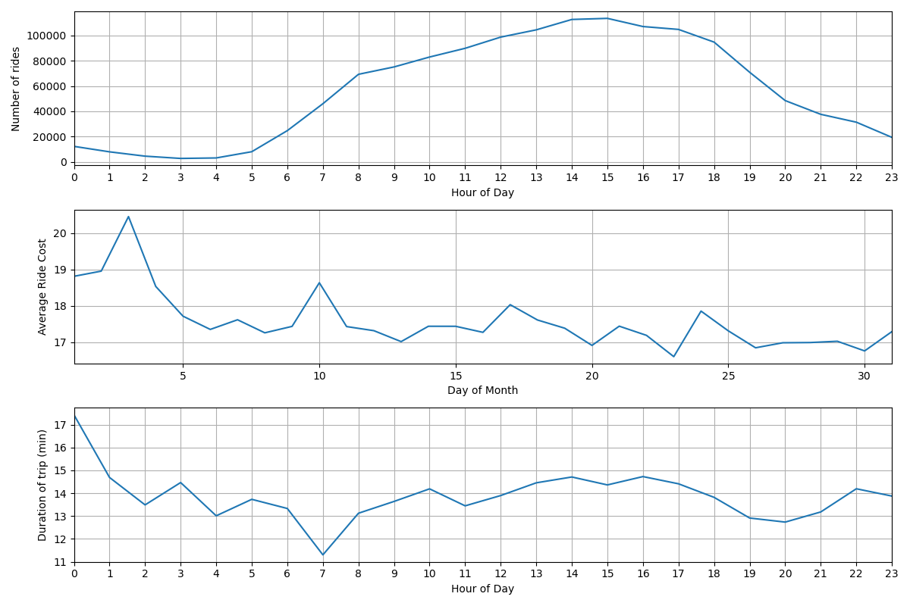

RPostgres, Railway, and Dates
Jed Rembold
Wednesday, October 26, 2022
Announcements
- Homework 7 due on Sunday night
- We’ll keep this Sunday due date going forward for the rest of the semester
- I’m unfortunately still working on the midterm grading :(
- This next week’s homework will be more project centric
- In class polling: rembold-class.ddns.net
An Interface
- SQL is brilliant for working within our databases
- It is not generally as flexible to handle other common scripting tasks
- You may at times need an interface between a common scripting language (say R or Python) and SQL
- These interfaces generally allow two major things to happen:
- You can trigger certain SQL commands to happen in the database from within your other script
- You can query results out of a database using SQL and bring them directly into your scripting language, ready for use
All about the connection
- Regardless of the scripting language, an interface is generally built around an initial connection object that gets defined in the language
- The connection object is initially formed by requiring information
about the database you desire to connect to
- IP address / Port
- Database name
- User you’ll be connecting as
- User password
- All other commands will use the connection object as a method to communicate with the database
- Frequently will form one connecting at the start and then maintain it, but you could connect and disconnect as needed
Package Management
- Tidyverse already has the dbplyr package for working with databases,
which brings along with it the necessary DBI package
- The DBI package is the one responsible for facilitating the connection and providing many common functions for interacting with the database
- Other packages are built on top of DBI to allow connections to different types of databases, all using a similar syntax
- You will also need
RPostgreSQL, which is built on top of DBI to allow for connections to PostgreSQL databases
Making a connection
- The
dBConnectcommand is used to create a connection object - Needs at least one input, corresponding to a DBI object representing
the type of database to connect to
- For Postgres, that can be
RPostgreSQL::PostgreSQL()
- For Postgres, that can be
- Further parameters can customize aspects of what database is
connected to
dbnamefor the database namehostfor the IP address (or localhost if on same system)portfor a specific portuserfor the connecting usernamepasswordfor the corresponding password
- Save the connection object as something! You will need it!
Example Connection
Connecting to a generic postgres database living on the same computer:
con <- dbConnect(RPostgreSQL::PostgreSQL(), dbname = 'analysis', host = 'localhost', port = 5432, user = 'postgres', password = 'postgres')
Reading information
- Once you have a connection, you can query the database and bring that information into R!
- Several approaches
Using DBI directly:
output <- dbGetQuery(con, "SELECT * FROM pokemon")- This reads the resulting table directly into a dataframe stored in local memory
Using dbplyr:
output <- tbl(con, sql("SELECT * FROM pokemon"))- This stores in the
outputa database table object, which is essentially a map to the information in the database - You can filter, aggregate, etc on this object as if it were a local dataframe, but it is actually still on the server!
- dplyr converts all the R commands into corresponding SQL that is run serverside
- This stores in the
Writing information
- For writing information to the database, or any other SQL commands that don’t return a table, things are more straightforward (kinda)
- I would recommend using
dbExecute, as I’ve found it to be the most straightforward and convenient - Takes two required arguments:
- The desired connection object
- A string containing the SQL you desire to run
dbExecute( con, "INSERT INTO test VALUES ('Jed', 1985)" )
Parameterizing Information
- Often, you have gotten information from another source that you want to embed inside an SQL query
- You could do this directly through string processing, using
something like
pasteorglue- Doing this blindly though can open you up to SQL-Injection attacks!
- A better way is through query parameterization
- Indicate placeholders in the query where you want information to be subbed in, and then supply that information
- The interface library then takes care of sanitizing the input and making sure nothing nefarious is going on before inserting the desired strings
RPostgresql Parameterization
Uses ordered placeholders using a dollar sign followed by a number:
$1,$2, etc- This is a bit different than many implementations, which let you
just use
?marks
- This is a bit different than many implementations, which let you
just use
Can provide a parameterization list after the query:
dbExecute(con, "INSERT INTO test VALUES ($1, $2)", list('Jed', 1985))Could also provide a 1-row tibble of the necessary length
In RPostgreSQL, there seems to be no way to do bulk inserts using parameterization, unfortunately
Can also work with
dbGetQuerystatements:dbGetQuery(con, "SELECT * FROM pokemon WHERE hp > $1", params=list(50))
Sleeping
For long running data acquisition scripts, it is often useful to have the program “wait” a set amount of time between grabbing data
You can do this in R with the
Sys.sleep(duration)- Duration is given in seconds
Such statements are generally embedded in long running or infinite loops:
while (TRUE) { ...do something cool... Sys.sleep(60) # Wait a minute }
Activity
- Take some time now to:
- From within R, create a new table in your database of choice
- You can name it anything you want, and have whatever columns you want
- Ensure after creating it that you can access and query this table from your client of choice!
- From within R, read in a dataframe of all the number of superheros who have each available superhero power and use that to create a histogram in ggplot.
- From within R, create a new table in your database of choice
Break Time!

Railway Introduction
- There are many different webhosting options these days
- For this class, I was looking for:
- Something fairly straightforward
- Something free
- Something that could easily handle both a database and a data acquisition script
- Railway.app is what I found
Railway Details
- You get $5 free dollars of usage each month, 500 hrs without even
giving a credit card
- For what we will be doing, normal usage should be well below that $5 threshold, making it essentially free
- Can spin up a Postgres database easily, in the cloud
- Can also launch a Docker container
- Builds the image directly from a Dockerfile and supporting files in a GitHub repository
- You can sign up for Railway using your GitHub account
Creating a DB
- Creating a new Postgres database is drop dead simple:
- Create a new project
- Select “Provision PostgreSQL”
- Give it a moment, and then it will be up and running!
- You can click on it in your project to bring up options where you
can:
- Add tables
- Query the data directly
- Get the all important connection information
- Test it! You should be able to connect using this connection information from your client of choice!
Deploying a Docker Container
- We also need a method to deploy a Docker container that will run our scraping script
- In your project, select “New” and then choose “GitHup Repo”
- You’ll then need to choose Configure/Install GitHub App
- This will link Railway.app to your GitHub account
- You can choose to either link it to all your repositories, or, like me, choose specific repositories
- In that repository, all you need is a Dockerfile and any supporting
files (like your R script) that you would normally need to build the
image
- Build an image first on your local machine to make sure it works! Then just copy the same files into this repository
- Whenever you commit a new change to that repo, Railway will automatically rebuild the Docker image and redeploy it, which is pretty slick
Environmental Variables
Environmental variables are shared with all entities in your railway project!
This means that you can use them to directly access the database properties, without hardcoding them in
- This also make your image more flexible, where it could connect to any database given the proper environmental variables
In R, to access an environmental variable:
A <- Sys.getenv("PGHOST")
Reminders
- We have about 4 current date or time related data types
- Date time types:
DATE: holds a single individual dayTIME: holds a single individual timeTIMESTAMPor variants withTIMESTAMPZ: holds a combination of date and time, along with a potential time zone
- Interval types:
INTERVAL: holds a duration of time
Extracting Pieces
- Having all the information in one value is convenient, but sometimes
you only need pieces
- The hour from the time, or the month from the date
- These can be particularly important with aggregates!
- Two methods to extract pieces of any datetime or interval type:
- SQL standard:
extract( text FROM datetime_value ) - Postgres specific:
date_part( text, datetime_value )
- SQL standard:
- Both will return a
DOUBLE PRECISIONvalue of whatever part was requested
Parts of Extract
- You have a wide variety of what you can extract
| text | Description |
|---|---|
| century | What century the date is in. 1st century starts 0001-01-01★ |
| day | What day of the month |
| decade | The year divided by 10 |
| dow | The day of the week (0-6, starting with Sunday) |
| doy | The day of the year |
| epoch | Number of seconds since 1970-01-01 |
| hour | The current hour (0-23) |
| microseconds | The number of microseconds |
| text | Description |
|---|---|
| milliseconds | The number of milliseconds |
| minute | The minute |
| month | The month (1-12) |
| quarter | What quarter of the year (1-4) |
| second | The number of seconds |
| timezone | The timezone offset in seconds |
| timezone_hour | The timezone offset in hours |
| week | What week of the year. ISO weeks start on Monday |
| year | The year |
★ – If you disagree with this, please write your complaint to: Pope, Cathedral Saint-Peter of Roma, Vatican.
Reversing it
- Often times existing data sets have already separated out different
aspects of the date or time
- Year, month, and day might be in different columns for example
- It can be useful to “stitch” these together into an actual datetime type for further use.
- Postgres gives you a handful of functions to do so:
make_date( year, month, day ): Returns a newDATEtype valuemake_time( hour, minute, seconds ): Returns a newTIMEtype value (with no timezone)make_timestampz(year,month,day,hour,minute,second,time zone): Returns a newTIMESTAMPZtype valuemake_timestampandmake_intervalalso exist
Aging well
- Subtracting two
DATEtype values will give just anINT(in days) - Subtracting two
TIMESTAMPtype values will give anINTERVAL, with the biggest “unit” in days - Using Postgres’s
age()function can smooth over both and give units larger than daysage( datetime1, datetime2 ): Subtracts datetime2 from datetime1
- This can still give you awkward interval units at
times though, so also consider using
justify_interval( interval ), which breaks intervals into divisions that don’t exceed a categories max- Hours would always be between 0 and 23 for instance, or months between 1 and 12
- Especially if you want to extract a particular part, this is highly recommended
What time is it?
- Standard SQL also provides constants for grabbing the current system time and date
| function | description |
|---|---|
current_date |
Returns the current date |
current_time |
Returns the current time with timezone |
localtime |
Returns the current time without timezone |
current_timestamp★ |
Returns the current date and time with timezone |
localtimestamp |
Returns the current date and time without timezone |
★ – Postgres also offers the shorter
now() function to do the same
thing
Time Zones
- Dealing with time zones can be a headache, and it is a very nice feature that Postgres can work with them smoothly
- By default, Postgres will display any timestamp with a time zone with the time as you would measure it in your current system timezone
- What is your current system timezone?
SHOW timezone;
- Getting general information about timezones:
- Getting abbreviations:
SELECT * FROM pg_timezone_abbrevs;
- Getting full names:
SELECT * FROM pg_timezone_names;
- Getting abbreviations:
Teleportation
- It can sometimes be useful to switch your “current” time zone
- Maybe it is easier to compare times to someone else living in that time zone
- Several methods to make the switch:
Change your
postgressql.conffile, which controls your Postgres server. Only recommended if you have permanently moved elsewhere and the database time zone has not updated appropriately.Set future queries in a single session to be from a new timezone:
SET timezone TO time_zone_name_or_abbrv;- This will also adjust what values your
localtimeorlocaltimestampreport!
- This will also adjust what values your
Transform a single query to be reported in a different time zone:
SELECT dt_col_name AT TIME ZONE tz_name_or_abbrv FROM tablename;
Activity
- Using the taxi rides dataset, see if you can:
- Compute the number of rides given each hour of the day
- Compute the average cost of rides over each day of the month
- Compute the median cost of rides over each day of the week
- Compute the average duration of each ride over each hour of the day
- Groups:
- Jullian and Karol
- Maribel and Rochelle
- Nina and Andrew
- Liam and Ellie
- Connor and Megan
Results to compare against
